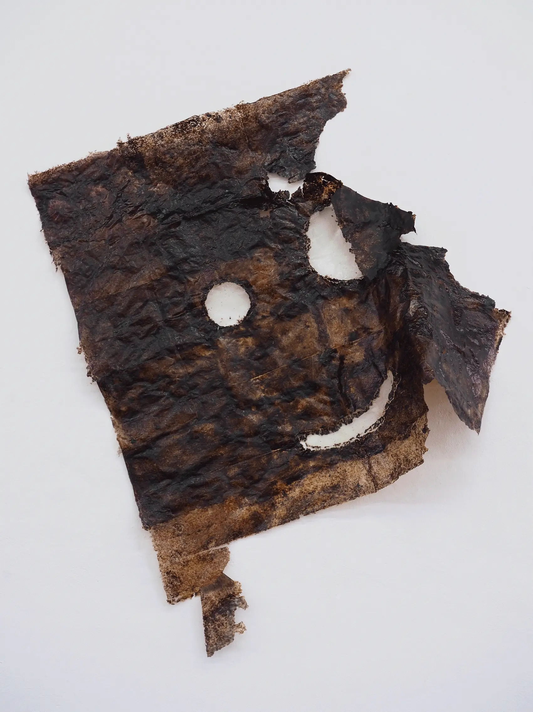
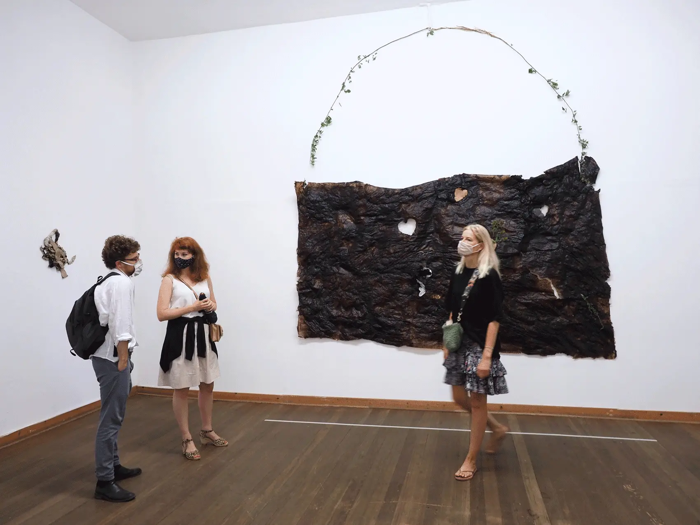
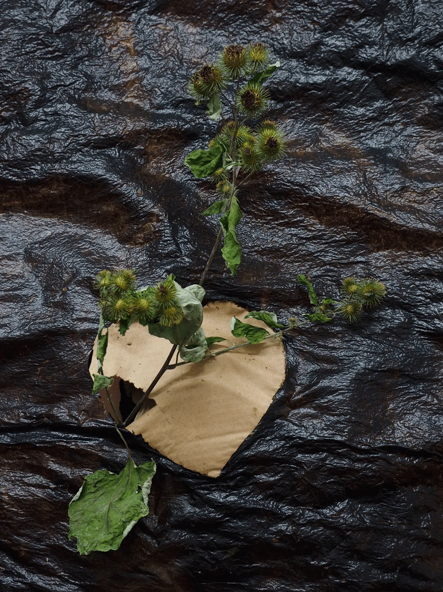
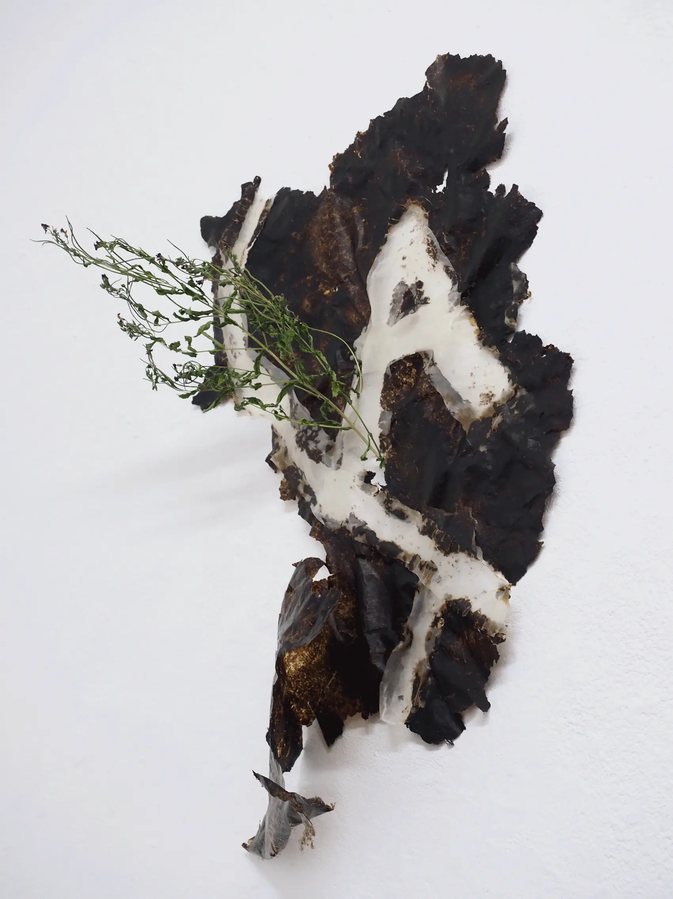
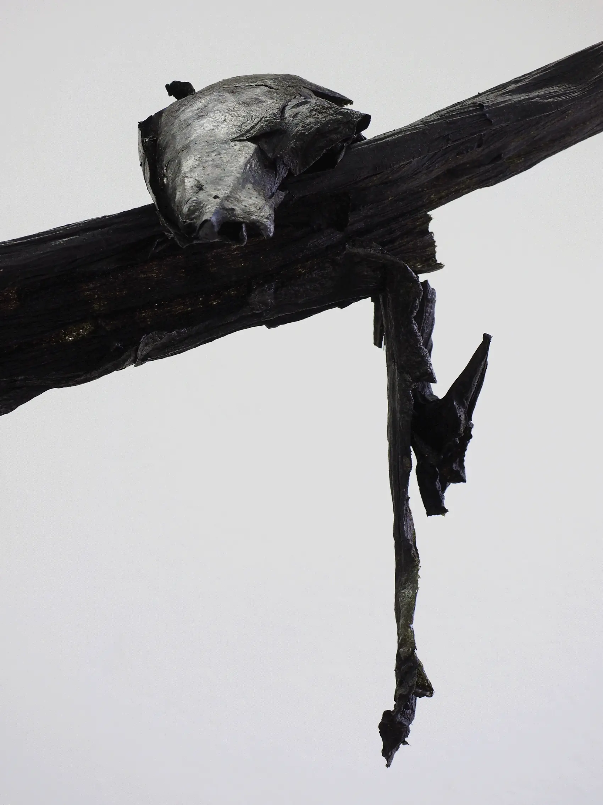
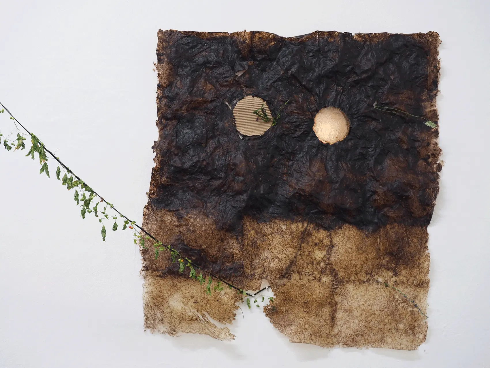
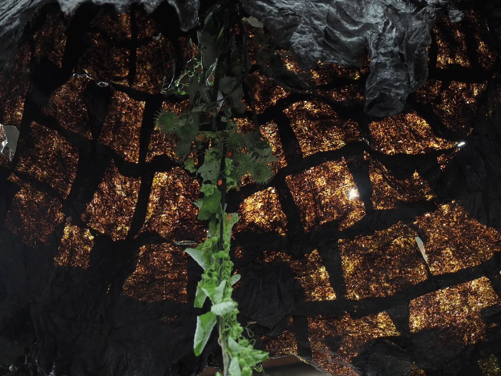
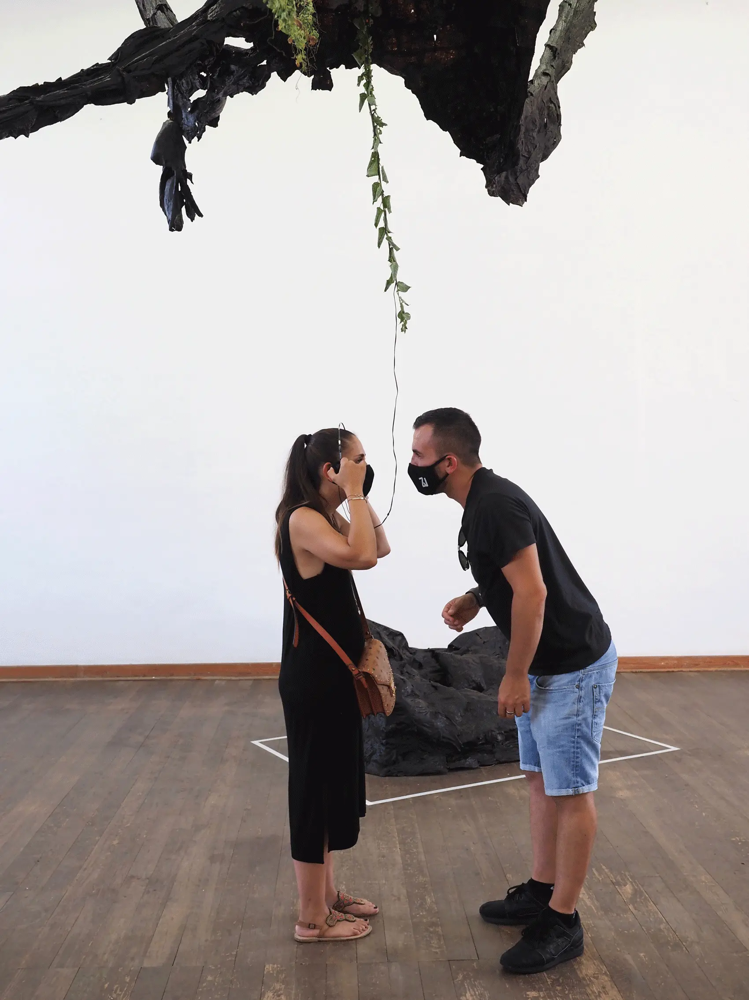
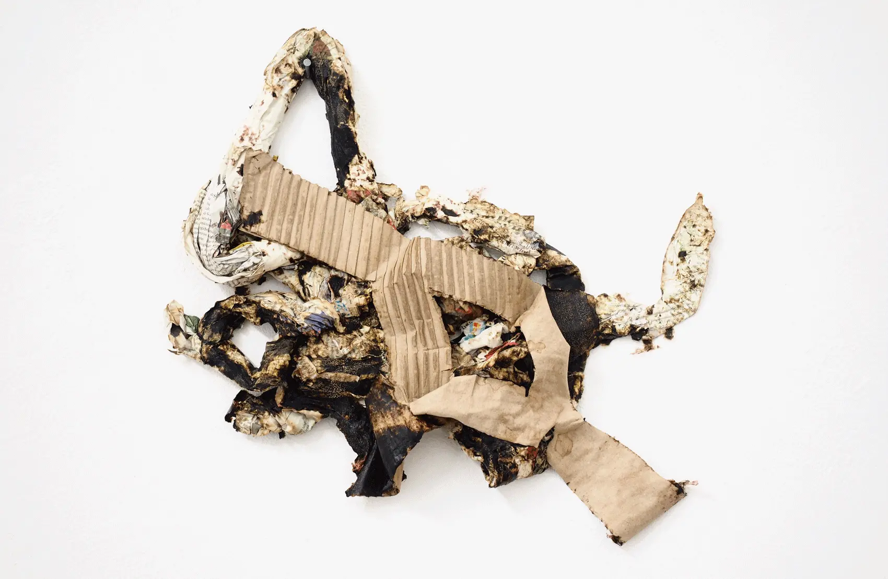

PRESS RELEASE
The title “Listen With Your Heart” by the summer studio in
the Kulturbahnhof Eller, deals with the interdependence of man and
nature. A balance that must not be shaken in order not to endanger
existence. In fact, however, the person takes possession according to
his nature and thus ultimately destroys the harmony of the common
lines of life. Every day we receive scientific data, satellite images,
and climate diagrams that show us climate change and its devastating
consequences for humans and nature. Art, on the other hand, can
operate completely free of this scientific objectivity and morality.
There are other ways of approaching life in a seemingly dwindling
world. The artist creates a very unique framework for sensual access
and aesthetic representation. Her work does not show a dark
apocalypse. Her works are poetic and shaped by a romanticizing utopia
of a better world. In the exhibition, she works with plant-based
materials. She uses nori seaweed and rice paper for her shapes,
picture surfaces, and room installations. The dry algae leaves are
dissolved in water and scooped up with a sieve to be brought into a
new shape. Fragile images and vulnerable structures emerge and unfold
the space. Yaël adds to these works the plants from the
surrounding area, which she found while walking around the cultural
station. It thus links the interior with the outside space and gives
the plants a new room to grow. She often adds sound or video to her
room installations. In the old Eller train station, she lets music
penetrate from the outside through the joints and cracks of the
building and lets the visitor hear it through headphones in her room
installation. It’s the song «Listen With Your Heart»
from the movie Pocahontas. The myth of history is the supposedly
peaceful settlement of North America by the Europeans. The main
character is the daughter of an Indian chief who mediates between the
Indians and the English. «You have to see things with the eye in
your heart, not with your eye in your head.» (John Fire Lame
Deer, Sioux-Lakota) Yaël Kempf’s work aims to sharpen our
perception of fragility. It lets us feel and see what has been
lost.
Mara Sporn